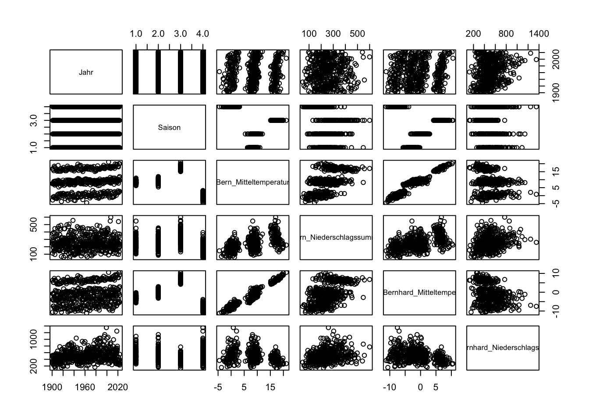
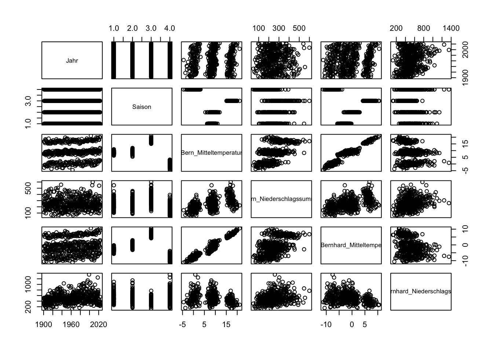
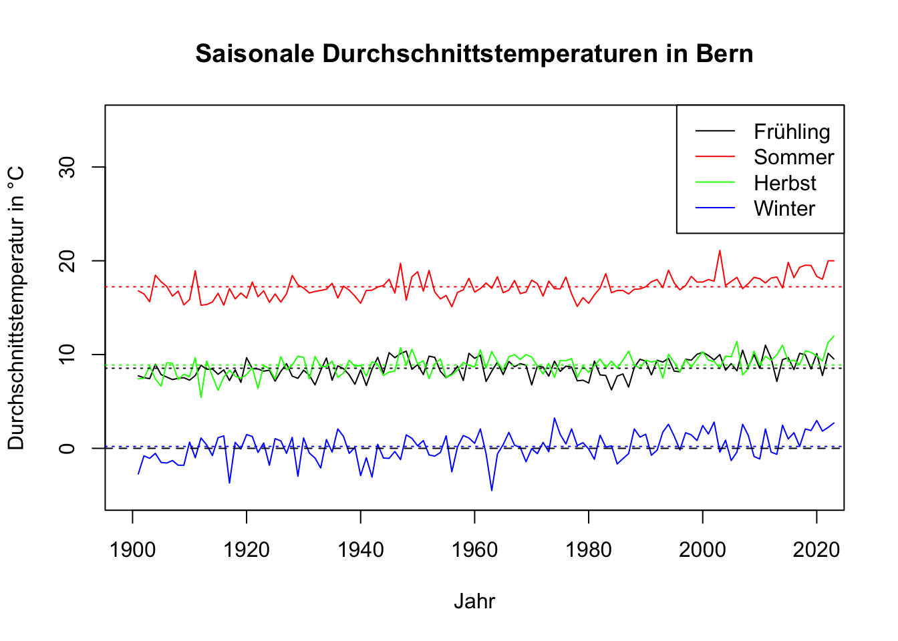
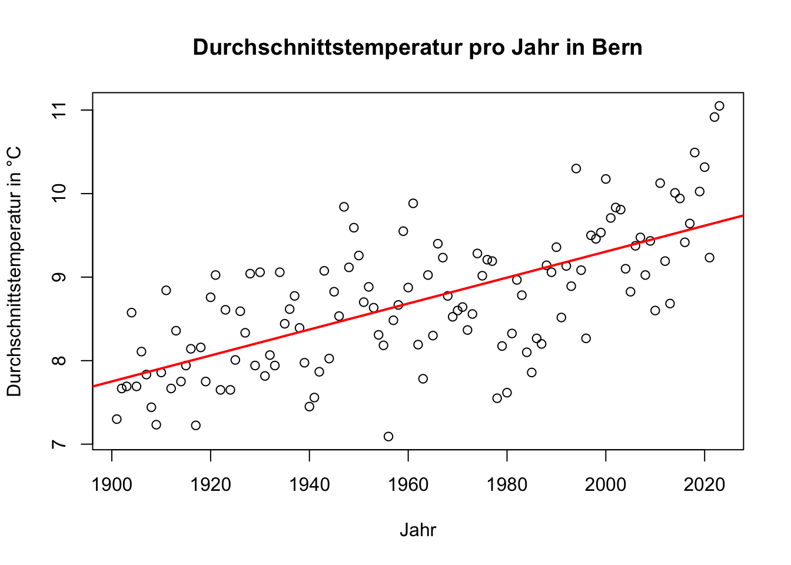
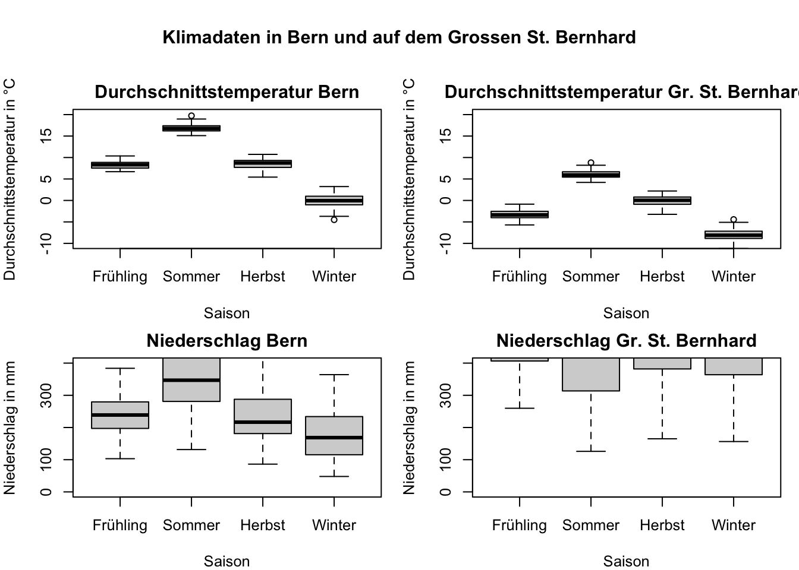
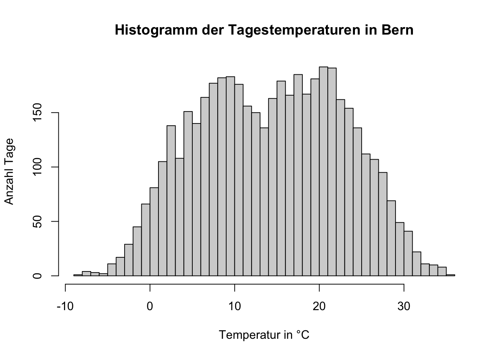
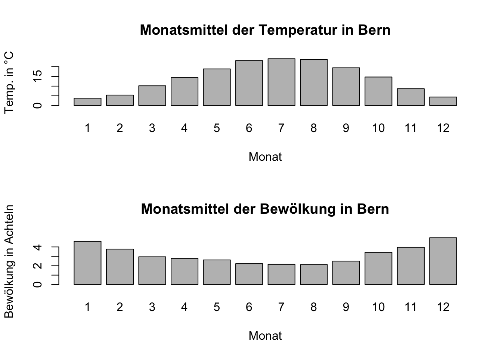
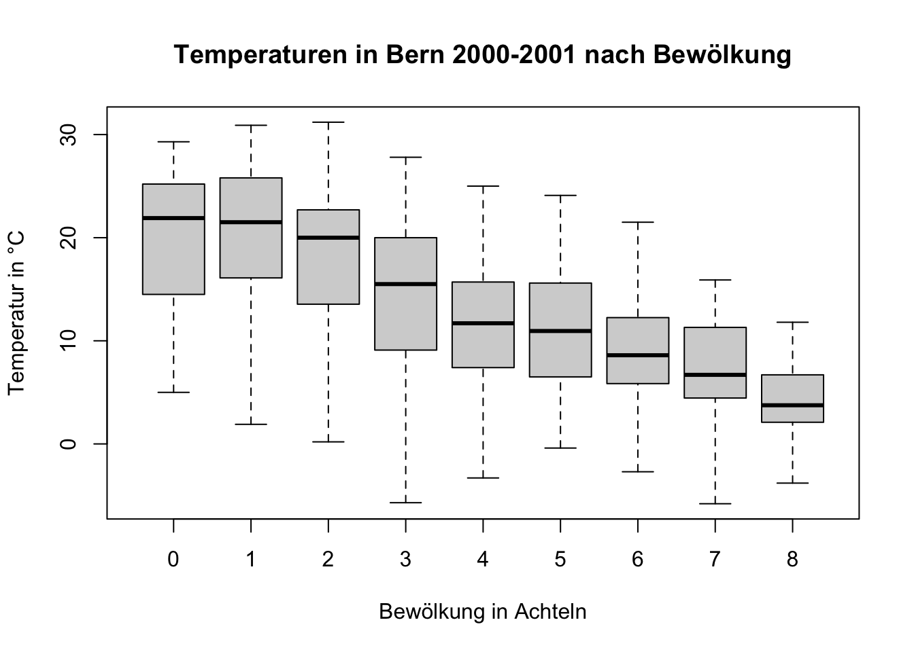

plot(meteodaten)
“High-level” Plots können in R mit der plot() Funktion erstellt werden. Diese Funktion erstellt automatisch für die gegebenen Daten ein (geeignetes) Diagramm.
Wenn wir aber Beispielsweise unser ganzes meteodaten Data Frame plotten wollen, weiss die Funktion nicht, wie sie das tun soll und plottet einfach alle Spalten gegen alle anderen Zeilen. Dies ist in diesem Fall nicht sinnvoll.
plot(meteodaten)
Um unsere Daten sinnvoller zu plotten müssen wir die Daten zuerst filtern und dann plotten.
Wir diskutieren die verschiedenen Schritte hier später:
# Subsets der Daten erstellen
saison_fruehling <- meteodaten[meteodaten$Saison == "Fruehling(MAM)", ]
saison_sommer <- meteodaten[meteodaten$Saison == "Sommer(JJA)", ]
saison_herbst <- meteodaten[meteodaten$Saison == "Herbst(SON)", ]
saison_winter <- meteodaten[meteodaten$Saison == "Winter(DJF)", ]
# Plot mit den Saisontemperaturen erstellen erstellen
plot(saison_fruehling$Jahr, saison_fruehling$Bern_Mitteltemperatur,
type = "l",
xlab = "Jahr",
ylab = "Durchschnittstemperatur in °C",
main = "Saisonale Durchschnittstemperaturen in Bern",
xlim = c(1900, 2020),
ylim = c(-5, 35))
# Weitere Linien für andere Jahreszeiten auf den selben Plot hinzufügen
lines(saison_sommer$Jahr, saison_sommer$Bern_Mitteltemperatur,
col = "red")
lines(saison_herbst$Jahr, saison_herbst$Bern_Mitteltemperatur,
col = "green")
lines(saison_winter$Jahr, saison_winter$Bern_Mitteltemperatur,
col = "blue")
# Gestrichelte Horizontale Linie bei 0 hinzufügen
abline(h = 0, lty = 2)
# Saisonale Mittelwertlinien hinzufügen
abline(h = mean(saison_fruehling$Bern_Mitteltemperatur),
col = "black",
lty = 3)
abline(h = mean(saison_sommer$Bern_Mitteltemperatur),
col = "red",
lty = 3)
abline(h = mean(saison_herbst$Bern_Mitteltemperatur),
col = "green",
lty = 3)
abline(h = mean(saison_winter$Bern_Mitteltemperatur),
col = "blue",
lty = 3)
# Legende hinzufügen
legend("topright",
legend = c("Frühling", "Sommer", "Herbst", "Winter"),
col = c("black", "red", "green", "blue"),
lty = 1,
xpd = TRUE)
Schauen wir uns nun die verschiedenen Schritte im Detail an.
meteodaten_saison.csv ein.# CSV-Datei einlesen
meteodaten <- read.csv('Data/meteodaten_saison.csv',
sep = ',',
header = TRUE)Der Parameter sep = ',' gibt an, dass die Werte in der CSV-Datei durch Kommas getrennt sind.
Der Parameter header = TRUE gibt an, dass die erste Zeile der CSV-Datei die Spaltennamen enthält.
meteodaten Daten aus verschiedenen Jahreszeiten enthält, erstellen wir Subsets für jede Jahreszeit. Damit können wir die Daten für jede Jahreszeit separat plotten.# Subsets der Daten erstellen
saison_fruehling <- meteodaten[meteodaten$Saison == "Fruehling(MAM)", ]
saison_sommer <- meteodaten[meteodaten$Saison == "Sommer(JJA)", ]
saison_herbst <- meteodaten[meteodaten$Saison == "Herbst(SON)", ]
saison_winter <- meteodaten[meteodaten$Saison == "Winter(DJF)", ]Mit dem == Operator vergleichen wir die Werte auf Gleichheit.
meteodaten$Saison == "Fruehling(MAM)"Wir überprüfen also Zeile für Zeile, ob der Wert in der Spalte Saison gleich dem String "Fruehling(MAM)" ist. Dies wird in einen boolschen Vektor umgewandelt, der TRUE für Zeilen enthält, die dem Kriterium entsprechen, und FALSE für Zeilen, die es nicht tun.
Betrachten wir nun eine Klammer weiter aussen, um zu verstehen, was genau wir dem Subset zuweisen.
meteodaten[meteodaten$Saison == "Fruehling(MAM)", ]Hier wählen wir alle Zeilen aus dem Data Frame meteodaten aus, in denen die Spalte Saison den Wert "Fruehling(MAM)" hat. Da wir nach dem letzten Komma nichts weiter angeben, wählen wir alle Spalten aus.
Unsere Saisonalen Data Frames enthalten also nicht nur die Temperatur-Mittelwerte aus Bern, sondern auch die Niederschlagswerte von Bern und dem Grossen St. Bernhard. Wir greifen im erstellten Plot nur auf die Temperaturwerte zu.
# Plot mit den Saisontemperaturen erstellen erstellen
plot(saison_fruehling$Jahr, saison_fruehling$Bern_Mitteltemperatur,
type = "l",
xlab = "Jahr",
ylab = "Durchschnittstemperatur in °C",
main = "Saisonale Durchschnittstemperaturen in Bern",
xlim = c(1900, 2020),
ylim = c(-5, 35))Die plot() Funktion hat viele Parameter, die wir verwenden können, um den Plot anzupassen.
| Parameter | Beschreibung |
|---|---|
plot(x, y) |
Erstellt einen Plot der Werte in x gegen die Werte in y. Wir plotten hier die Spalte Jahr aus dem Subset saison_fruehling gegen die Spalte Bern_Mitteltemperatur aus dem gleichen subset. |
type |
Gibt den Typ des Plots an. Hier verwenden wir "l", um eine Linie zu zeichnen. |
xlab |
Beschriftung der x-Achse. |
ylab |
Beschriftung der y-Achse. |
main |
Titel des Plots. |
xlim |
Bereich der x-Achse. Hier von 1900 bis 2020. |
ylim |
Bereich der y-Achse. Hier von -5 bis 35. |
In R können wir mit der lines() Funktion weitere Linien zu einem bestehenden Plot hinzufügen.
# Weitere Linien für andere Jahreszeiten auf den selben Plot hinzufügen
lines(saison_sommer$Jahr, saison_sommer$Bern_Mitteltemperatur,
col = "red")
lines(saison_herbst$Jahr, saison_herbst$Bern_Mitteltemperatur,
col = "green")
lines(saison_winter$Jahr, saison_winter$Bern_Mitteltemperatur,
col = "blue")Hier müssen wir jeweils nicht mehr ganz so viele Parameter angeben, da wir bereits die Achsenbesschriftung etc. vorgenommen haben. Was wir noch angeben müssen, ist die Farbe der Linie mit dem col Parameter.
# Gestrichelte Horizontale Linie bei 0 hinzufügen
abline(h = 0, lty = 2)Mit der abline() Funktion können wir Linien zu einem Plot hinzufügen. Mit dem h Parameter geben wir die y-Position der Linie an, und mit dem lty Parameter geben wir den Linientyp an. Hier verwenden wir lty = 2, um eine gestrichelte Linie zu zeichnen.
# Saisonale Mittelwertlinien hinzufügen
abline(h = mean(saison_fruehling$Bern_Mitteltemperatur),
col = "black",
lty = 3)
abline(h = mean(saison_sommer$Bern_Mitteltemperatur),
col = "red",
lty = 3)
abline(h = mean(saison_herbst$Bern_Mitteltemperatur),
col = "green",
lty = 3)
abline(h = mean(saison_winter$Bern_Mitteltemperatur),
col = "blue",
lty = 3)Hier fügen wir gestrichelte Linien für die Mittelwerte der Temperatur für jede Jahreszeit hinzu. Wir verwenden die mean() Funktion, um direkt im Aufruf den Mittelwert zu berechnen.
# Legende hinzufügen
legend("topright",
legend = c("Frühling", "Sommer", "Herbst", "Winter"),
col = c("black", "red", "green", "blue"),
lty = 1,
xpd = TRUE)Mit der legend() Funktion können wir eine Legende zu einem Plot hinzufügen. Wir geben die Position der Legende mit dem topright Parameter an. Mit dem legend Parameter geben wir die Beschriftungen für die Linien an. Mit dem col Parameter geben wir die Farben der Linien an. Mit dem lty Parameter geben wir den Linientyp an. Mit dem xpd Parameter geben wir an, ob die Legende ausserhalb des Plots sein soll.
aggregate()-FunktionWenn wir von unseren nach Jahreszeiten sortierten Daten nun bspw. den Durchschnitt der Temperaturwerte pro Jahr berechnen wollen, können wir die aggregate() Funktion verwenden.
# Durchschnittstemperatur pro Jahr berechnen
durchschnittstemperatur_pro_jahr <- aggregate(Bern_Mitteltemperatur ~ Jahr,
data = meteodaten,
FUN = mean)
# Plot erstellen
plot(durchschnittstemperatur_pro_jahr$Jahr,
durchschnittstemperatur_pro_jahr$Bern_Mitteltemperatur,
type = "p",
xlab = "Jahr",
ylab = "Durchschnittstemperatur in °C",
main = "Durchschnittstemperatur pro Jahr in Bern")
# Lineares Modell (lineare Regression) erstellen
trend <- lm(Bern_Mitteltemperatur ~ Jahr,
data = durchschnittstemperatur_pro_jahr)
# Trendlinie hinzufügen
abline(trend,
col = "red",
lwd = 2) # Die Farbe und Dicke der Linie anpassen
Die aggregate() Funktion nimmt vier Parameter:
Bern_Mitteltemperatur).Jahr).meteodaten).mean).Der ~-Operator wird in R verwendet, um die linke Seite von der rechten Seite zu trennen. In diesem Fall bedeutet dies, dass wir die Spalte Bern_Mitteltemperatur nach der Spalte Jahr aggregieren wollen.
Zusätzlich haben wir hier noch eine Trendlinie hinzugefügt. Dazu haben wir ein lineares Modell mit der lm() Funktion erstellt und die Trendlinie mit der abline() Funktion hinzugefügt.
Wir wollen nun für die Temperaturen und Niederschlagswerte in Bern und auf dem Grossen St. Bernhard Boxplots erstellen und diese in einem Diagramm nebeneinander plotten. Zusätzlich wollen wir die Daten Zeitlich bis ins Jahr 1980 beschränken. Auch dieser Code enthält einige zusätzliche und neue Schritte, welche wir uns anschliessend genauer ansehen.
# Definiere neue Kategorien-Namen und die gewünschte Reihenfolge
neue_namen <- c("Frühling", "Sommer", "Herbst", "Winter")
alte_namen <- c("Fruehling(MAM)", "Sommer(JJA)", "Herbst(SON)", "Winter(DJF)")
# Konvertiere 'Saison' in einen Faktor mit den neuen Namen und der gewünschten Reihenfolge
meteodaten$Saison <- factor(meteodaten$Saison,
levels = alte_namen,
labels = neue_namen)
# Mehrere Plots in einem Diagramm
par(mfrow = c(2, 2), # 2 Zeilen und 2 Spalten
mar = c(4, 4, 2, 1), # verkleinert die Ränder
oma = c(0, 0, 4, 0), # fügt Platz für den Titel hinzu
cex = 0.8) # verkleinert die Schriftgrösse
# Boxplots erstellen
boxplot(Bern_Mitteltemperatur ~ Saison,
data = meteodaten[meteodaten$Jahr <= 1980, ],
ylim = c(-10, 20),
ylab = "Durchschnittstemperatur in °C",
main = "Durchschnittstemperatur Bern")
boxplot(GrStBernhard_Mitteltemperatur ~ Saison,
data = meteodaten[meteodaten$Jahr <= 1980, ],
ylim = c(-10, 20),
ylab = "Durchschnittstemperatur in °C",
main = "Durchschnittstemperatur Gr. St. Bernhard")
boxplot(Bern_Niederschlagssumme ~ Saison,
data = meteodaten[meteodaten$Jahr <= 1980, ],
ylim = c(0, 400),
ylab = "Niederschlag in mm",
main = "Niederschlag Bern")
boxplot(GrStBernhard_Niederschlagssumme ~ Saison,
data = meteodaten[meteodaten$Jahr <= 1980, ],
ylim = c(0, 400),
ylab = "Niederschlag in mm",
main = "Niederschlag Gr. St. Bernhard")
# Gesamte Überschrift für alle Plots hinzufügen
title("Klimadaten in Bern und auf dem Grossen St. Bernhard", outer = TRUE)
Schauen wir uns die verschiedenen Schritte im Detail an:
Fruehling(MAM), Sommer(JJA), Herbst(SON), Winter(DJF). Um die Lesbarkeit zu verbessern und etwas kürzere Namen zu verwenden, definieren wir neue Namen. In einem nächsten Schritt konvertieren wir die Spalte Saison in einen Faktor1 mit den neuen Namen und der gewünschten Reihenfolge.neue_namen <- c("Frühling", "Sommer", "Herbst", "Winter")
alte_namen <- c("Fruehling(MAM)",
"Sommer(JJA)",
"Herbst(SON)",
"Winter(DJF)")
meteodaten$Saison <- factor(meteodaten$Saison,
levels = alte_namen,
labels = neue_namen)Wir verwenden die factor() Funktion, um die Spalte Saison, die aktuell als Strings vorliegt, in einen Faktor zu konvertieren. Mit dem levels Parameter geben wir die Reihenfolge der vorhandenen Werte in den Daten an – hier die alten Namen, da diese in den Rohdaten stehen. Der labels Parameter definiert die neuen Namen, die im Plot oder bei Ausgaben angezeigt werden sollen.
Wichtig zu verstehen ist, dass die Umwandlung mit factor() nicht die zugrunde liegenden Daten ändert, sondern nur die Art und Weise, wie die Kategorien dargestellt werden. Die ursprünglichen Werte (also die alten Namen) bleiben im Data Frame erhalten2, aber R verwendet die neuen Labels, um diese Werte im Plot oder bei der Ausgabe anders zu präsentieren.
par() Funktion können wir das Layout und die Platzierung der Plots anpassen.mfrow Parameter geben wir an, wie viele Zeilen und Spalten von Plots wir haben wollen. Hier haben wir 2 Zeilen und 2 Spalten.mar Parameter können wir die Ränder des Plots anpassen.oma Parameter können wir Platz für den Titel des gesamten Diagramms hinzufügen.cex Parameter können wir die Schriftgrösse anpassen.par(mfrow = c(2, 2), # 2 Zeilen und 2 Spalten
mar = c(4, 4, 2, 1), # verkleinert die Ränder
oma = c(0, 0, 4, 0), # fügt Platz für den Titel hinzu
cex = 0.8) # verkleinert die SchriftgrösseZusätzlich beschränken wir die Daten auf die Jahre bis 1980.
boxplot(Bern_Mitteltemperatur ~ Saison,
data = meteodaten[meteodaten$Jahr <= 1980, ],
ylim = c(-10, 20),
ylab = "Durchschnittstemperatur in °C",
main = "Durchschnittstemperatur Bern")Wir beachten auch hier wieder die Verwendung des ~-Operators, um die linke Seite von der rechten Seite zu trennen. In diesem Fall bedeutet dies, dass wir die Spalte Bern_Mitteltemperatur nach der Spalte Saison gruppieren wollen.
Wir verwenden die ylim Parameter, um die y-Achse auf einen bestimmten Bereich zu beschränken. Dies ist nützlich, um die Plots besser vergleichen zu können.
Die Selelektion der Daten erflogt im data Parameter. Hier wählen wir nur die Daten bis ins Jahr 1980 aus.
title("Klimadaten in Bern und auf dem Grossen St. Bernhard", outer = TRUE)Der outer Parameter gibt an, dass die Überschrift über allen Plots platziert werden soll.
Grafiken können entweder in RStudio unter dem Reiter “Export” … “Save Plot as PDF” oder “…Image” gespeichert werden.
Alternativ können mit den Funktionen pdf(), jpeg() und png() Grafiken direkt in R gespeichert werden.
# PDF-Datei erstellen
pdf(file = "boxplots.pdf",
width = 9,
height = 4.5) # Grösse des PDFs in Inch
# Boxplot aus der vorherigen Sektion erstellen
boxplot(Bern_Mitteltemperatur ~ Saison,
data = meteodaten[meteodaten$Jahr <= 1980, ],
ylim = c(-10, 20),
ylab = "Durchschnittstemperatur in °C",
main = "Durchschnittstemperatur Bern")
# PDF-Datei schliessen
dev.off()| Parameter | Beschreibung |
|---|---|
file |
Dateiname und Speicherort. Auch hier können absolute und relative Dateipfade verwendet werden. Wichtig ist die entsprechende Dateieindung (.pdf, .jpeg oder .png) anzugeben. |
width |
Breite des Plots in Inch. |
height |
Höhe des Plots in Inch. |
dev.off() |
Ist kein eigentlicher Parameter, aber ist am Ende jeder der Funktionen benötigt, um den Export zu beenden. |
na.strings= c('-','NA'))# CSV-Datei einlesen
meteodaten_tag <- read.csv('Data/meteodaten_tag.csv',
sep = ',',
header = TRUE,
na.strings = c('-', 'NA'))str() ansehen, ob Daten korrekt (z.B.als numerisch) gelesen wurden.str(meteodaten_tag)'data.frame': 4627 obs. of 7 variables:
$ Jahr : int 2000 2000 2000 2000 2000 2000 2000 2000 2000 2000 ...
$ Monat : int 1 1 1 1 1 1 1 1 1 1 ...
$ Tag : int 1 2 3 4 5 6 7 8 9 10 ...
$ Wochentag : chr "Sa" "So" "Mo" "Di" ...
$ Temperatur.C. : num 3.6 4.8 4.6 6.2 8.1 6.9 3.4 2.4 5.5 5.1 ...
$ Niederschlag.mm.Tag.: num 0 0 0 0 0.2 0 0 0 0.5 1.8 ...
$ Bewoelkung.Achtel. : int 3 7 3 3 3 3 6 6 6 7 ...hist()) mit den Tagestemperaturen mit feinen Abständen (breaks=40).hist(meteodaten_tag$Temperatur.C.,
breaks = 40,
xlab = "Temperatur in °C",
ylab = "Anzahl Tage",
main = "Histogramm der Tagestemperaturen in Bern")
monatsmittel <-
aggregate(cbind(Temperatur.C., Bewoelkung.Achtel.) ~ Monat,
data = meteodaten_tag,
FUN = mean,
na.rm = TRUE)Hinweis zur Funktion cbind(): cbind() fügt die Spalten Bern_Temperatur und Bern_Bewoelkung zusammen, um sie dann nach Monat zu gruppieren. Alternativ könnten wir die beiden Mittelwerte auch seperat berechnen und anschliessend mit einem merge() zusammenfügen.
temp_mittel <- aggregate(Temperatur.C. ~ Monat,
data = meteodaten_tag,
FUN = mean,
na.rm = TRUE)
bewoelkung_mittel <- aggregate(Bewoelkung.Achtel. ~ Monat,
data = meteodaten_tag,
FUN = mean,
na.rm = TRUE)
monatsmittel <- merge(temp_mittel, bewoelkung_mittel,
by = "Monat")par(mfrow=c(2,1))). Was erwartet ihr?# Mehrere Plots in einem Diagramm
par(mfrow = c(2, 1))
# Barplot für die Monatsmittel der Temperatur
barplot(temp_mittel$Temperatur.C.,
names.arg = temp_mittel$Monat,
xlab = "Monat",
ylab = "Temp. in °C",
main = "Monatsmittel der Temperatur in Bern")
# Barplot für die Monatsmittel der Bewölkung
barplot(bewoelkung_mittel$Bewoelkung.Achtel.,
names.arg = bewoelkung_mittel$Monat,
xlab = "Monat",
ylab = "Bewölkung in Achteln",
main = "Monatsmittel der Bewölkung in Bern")
# Data Frame filtern und in einem neuen Objekt speichern
meteodaten_tag_2000_2001 <- meteodaten_tag[meteodaten_tag$Jahr >= 2000 & meteodaten_tag$Jahr <= 2001, ]boxpolt()dar (je ein Boxplot pro Bewölkungsklasse). Beschriftet die Achsen und vergebt einen Titelboxplot(Temperatur.C. ~ Bewoelkung.Achtel.,
data = meteodaten_tag_2000_2001,
ylab = "Temperatur in °C",
xlab = "Bewölkung in Achteln",
main = "Temperaturen in Bern 2000-2001 nach Bewölkung")
# Berechnung der Spannweite und Varianz der Temperatur für jede Bewölkungsklasse
spannweite <- aggregate(Temperatur.C. ~ Bewoelkung.Achtel.,
data = meteodaten_tag_2000_2001,
FUN = function(x) diff(range(x)))
varianz <- aggregate(Temperatur.C. ~ Bewoelkung.Achtel.,
data = meteodaten_tag_2000_2001,
FUN = var)
# Umbenennen der Spalten, um Verwechslungen zu vermeiden
names(spannweite)[2] <- "Spannweite"
names(varianz)[2] <- "Varianz"
# Zusammenführen der Ergebnisse
ergebnisse <- merge(spannweite, varianz, by = "Bewoelkung.Achtel.")
# Ausgabe der Ergebnisse
ergebnisse Bewoelkung.Achtel. Spannweite Varianz
1 0 24.3 52.71585
2 1 29.0 60.76026
3 2 31.0 44.37131
4 3 33.5 54.83717
5 4 28.3 36.53915
6 5 24.5 34.10751
7 6 24.2 23.78013
8 7 21.7 29.81474
9 8 15.6 14.02061# Berechnung der Monatsmittel der Bewölkung
bewoelkung_mittel <- aggregate(Bewoelkung.Achtel. ~ Monat,
data = meteodaten_tag_2000_2001,
FUN = mean,
na.rm = TRUE)
# Bewölkungsärmster Monat
bewoelkung_min <- bewoelkung_mittel[which.min(bewoelkung_mittel$Bewoelkung.Achtel.), ]
bewoelkung_min Monat Bewoelkung.Achtel.
8 8 1.854839# Bewölkungsreichster Monat
bewoelkung_max <- bewoelkung_mittel[which.max(bewoelkung_mittel$Bewoelkung.Achtel.), ]
bewoelkung_max Monat Bewoelkung.Achtel.
12 12 5.016129Ein Faktor ist ein Datentyp in R, der kategorische Daten repräsentiert. Faktoren werden verwendet, um Daten zu kategorisieren und zu ordnen.↩︎
Wenn eine Spalte mit factor() bearbeitet wird, wird sie intern in diskrete Kategorien umgewandelt, jedoch ohne die ursprünglichen Daten zu überschreiben. Der levels Parameter bezieht sich auf die originalen Datenwerte, um sicherzustellen, dass R die Daten korrekt interpretiert. Die labels hingegen ändern nur, wie diese Daten für den Benutzer angezeigt werden. Dadurch bleibt der Inhalt des Data Frames unverändert, aber die Darstellung der Werte wird angepasst. Das ist nützlich, wenn man die Rohdaten beibehalten will, jedoch für Visualisierungen oder Präsentationen eine klarere oder kürzere Bezeichnung verwenden möchte.↩︎